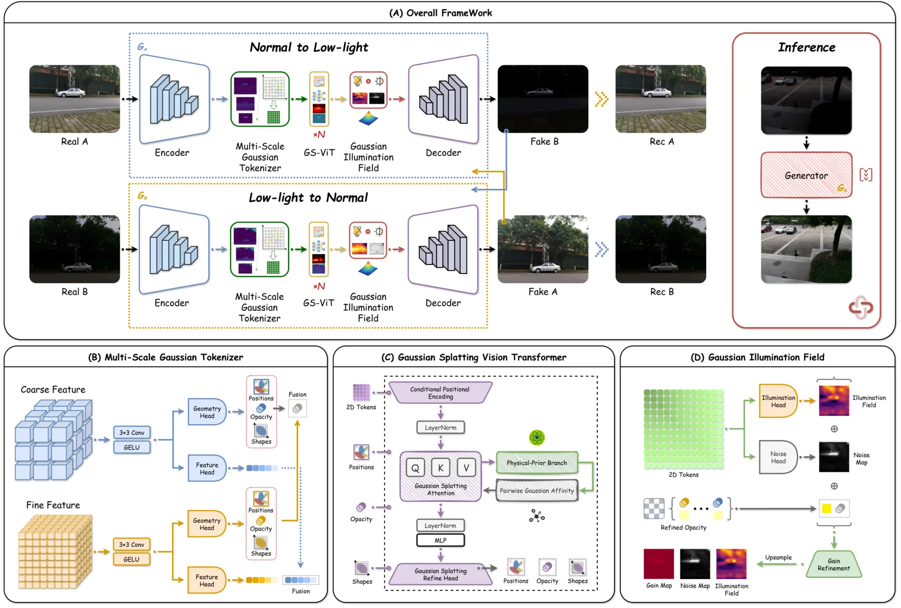
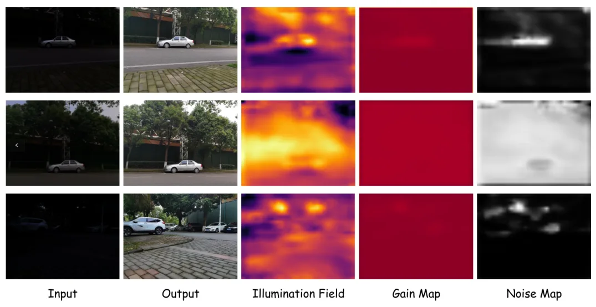
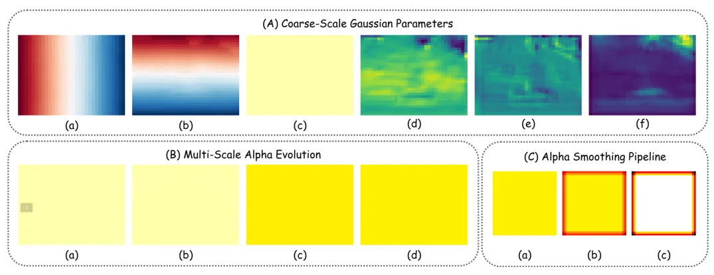
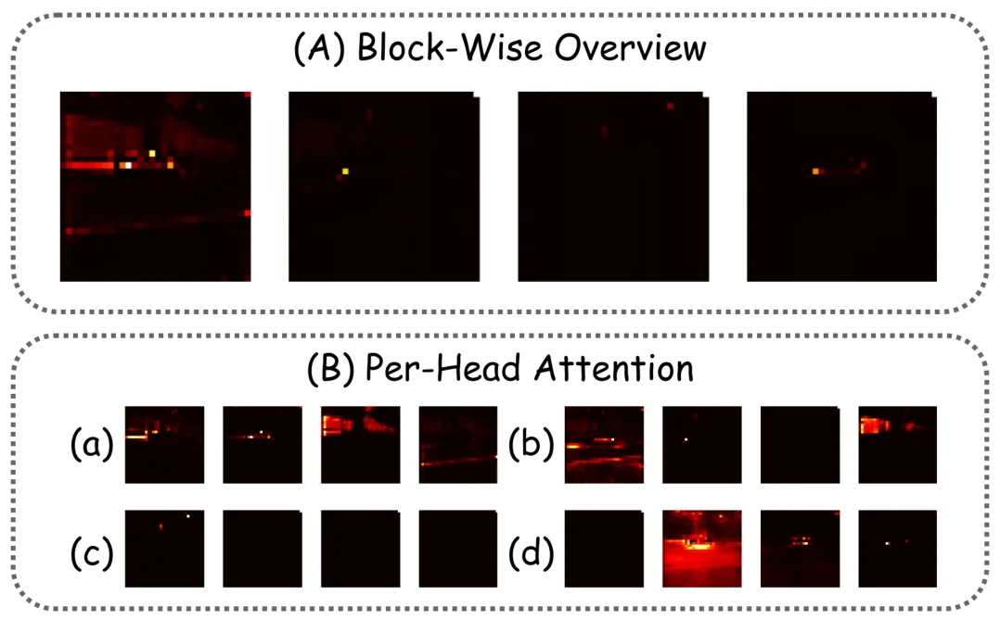
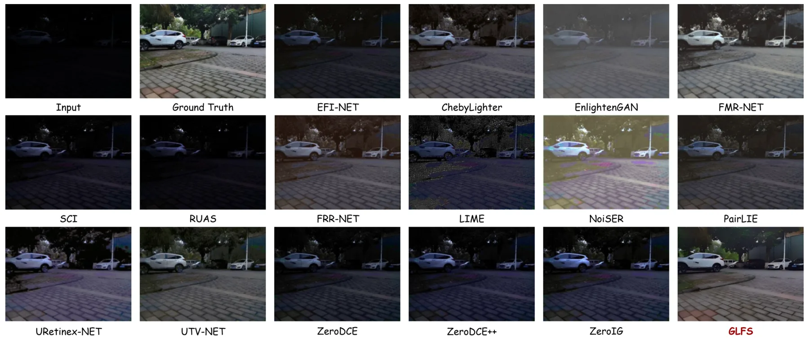
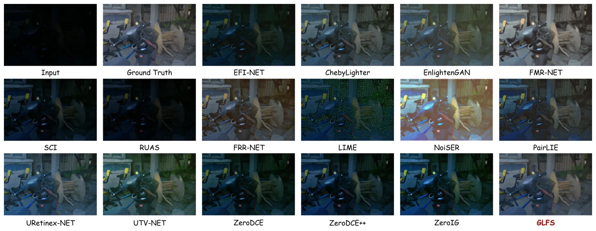

Gaussian Light Field Splatting：面向无监督低光增强的物理先验 Vision TransformerGaussian Light Field Splatting: A Physical Prior-Driven Vision Transformer for Unsupervised Low-Light Image Enhancement
关键词包含 Gaussian splatting，但任务是低光图像增强，不是三维重建或 SLAM；仅可作为夜间视觉前端预处理候选。
一句话工作总结
GLFS 把各向异性 Gaussian basis 照明先验注入 ViT 注意力，用于无监督低光增强和颜色/结构约束。
摘要
复杂非均匀照明下，无监督低光增强方法常出现局部曝光不均和颜色失真，许多 Vision Transformer 也缺少显式建模照明退化物理先验的机制。GLFS 提出一种 Gaussian light field splatting-based Vision Transformer，把 Gaussian splatting 的连续物理照明建模引入 Transformer 架构。方法用各向异性 Gaussian basis 的叠加表示场景照明，并在 self-attention 中引入 physics-guided biases，自适应推断空间 gain field，从而在复杂照明下进行均匀恢复。为减少增强过程中的色偏和结构退化，作者设计色彩向量角损失和亮度边缘损失，分别约束 hue consistency 和局部结构保真。消融与定量评估显示 GLFS 在照明校正和细节保持上有优势。
Existing unsupervised low-light image enhancement methods often encounter local exposure imbalance and color distortion under complex non-uniform illumination. In addition, most Vision Transformers lack an explicit mechanism for modeling the physical priors of illumination degradation. To address these limitations, we propose GLFS, a Gaussian light field splatting-based Vision Transformer that integrates continuous physical illumination modeling from Gaussian splatting into the Transformer architecture. In GLFS, scene illumination is represented by a superposition of anisotropic Gaussian basis functions. Physics-guided biases are introduced into self-attention to adaptively infer a spatial gain field, enabling accurate and uniform restoration under complex illumination. To reduce color bias and structural degradation during enhancement, a color-vector angular loss and a luminance-edge loss are further developed. These losses enforce hue consistency and improve the structural fidelity of local details. Extensive ablation studies and quantitative evaluations show that GLFS provides clear advantages in illumination correction and detail preservation. It achieves state-of-the-art performance and offers a new representation paradigm for low-light image enhancement.
中文解读摘录
- 链接：abs / PDF；作者：Yuhan Chen, Wenxuan Yu, Guofa Li, Fuchen Li, Kunyang Huang, Yicui Shi, Ying Fang, Wenbo Chu；类别：cs.CV；采集 score=6。
- 核心思路：把照明退化的物理先验写成各向异性 Gaussian basis 的连续光场，并作为 bias 注入 Vision Transformer self-attention，用于无监督低光增强。
- 方法要点：空间 gain field 由物理引导 attention 推断；色彩向量角损失和亮度边缘损失分别约束 hue consistency 与局部结构。
- 关注点：和 AIGS-Net 同属“Gaussian/Splatting 词命中但非三维几何”的低光增强线；如果后续做夜间 VIO/SLAM 前端增强，可作为候选图像预处理，但优先级低于真正的定位/建图论文。
图表/页面预览
{kind=link}

{kind=link}

{kind=link}

{kind=link}

{kind=link}

{kind=link}
